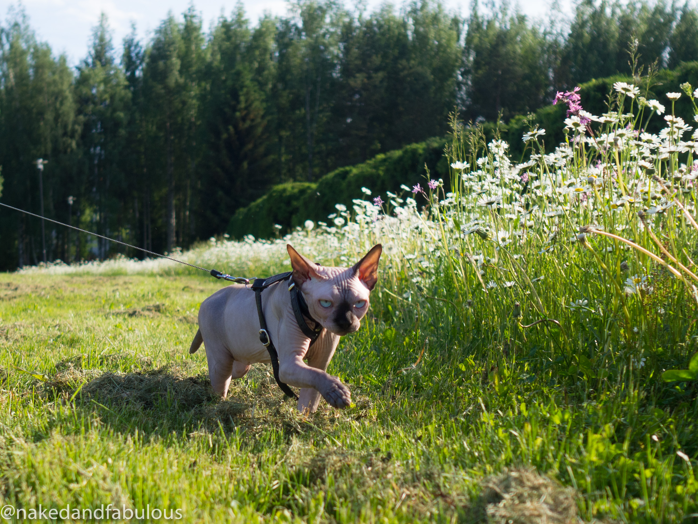

Minulla on Kissa
Minulta löytyy kotoa karvaton kissa nimeltään Kössi! Kössi on rodultaan Kanadan Sfinx,
ja ei Sfinx kissatkaan eivät ole täysin karvattomia vaan heiltä löytyy lyhyt "nukka" iholta.
Sfinxit rotu sai alkunsa Kanadassa 60-luvulla eli kauan sitten, mutta tänäpäivänä kodissa tallustelevat sfinxit ovat saaneet alkunsa jo 70-luvulla, (tästäkin jo kauheen pitkä aika)
kun tavalliseen maatiaiskissa pentueeseen syntyi karvattomia pentuja..


Minä ja tietokoneet?
Minulla ei erityisen suurta tietokone taustaa ole, kun olin pikku tyttö muistan kun ukkini osti ensimmäisen tietokoneensa, SE OLI VALTAVA!
siinä oli muistaaksen käyttöjärjestelmänä windows 98. Muistan oikeastaan vaan että siinä oli valtavan pelottava peli nimeltään skifree jossa mörrimöykky lähti seurailemaan.
sen jälkeen meille tuli koneita tasaiseen tahtiin ja niitä tuli käyteltyä ihan perus tasolla. En ole koskaan ollut koneiden kanssa mikään pro mutta ehkä vielä joskus :)
Ensimmäisen tietokoneen kokosin vasta kesällä 2021, kun paljon tuli aiheeseen perehdyttyä tässä kuluneen kesän aikana, kaikki meni hyvin ja kone lähti jopa käyntiin. tätä ennen en siis ollut muuta kun seurannut vierstä kun mieheni oli kasannut oman koneensa ja tietenkin koulun myötä tutustunut aiheeseen.